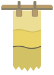

黃蘗本來就在書裡
黃蘗樹皮裡的小檗鹼防蟲，唐代寫經紙就是先「入潢」再抄。今天補一卷黃紙經，最對的顏色，就是原來那一味。

蘗紙補書室pheh-tsuá · 古籍紙本修復與草木染紙點一條，它會被浸進下一缸媒染——看顏色從水線往上爬。
蘗紙補書室在臺南信義街做古籍與舊文書的紙本修復：族譜、契書、籤詩簿、日治時期的戶籍謄本、線裝書。破了的地方用楮紙補，但白的楮紙補上去，就是一塊永遠在喊「我是新的」的白。
所以補紙要先染。我們不用壓克力顏料調色，用的是裱褙師傅用了幾百年的植物染材：矢車、黃蘗、胡桃、蘇芳、茶，再配上明礬、鐵漿、銅三種媒染。一樣的矢車，泡明礬是暖的米褐，泡鐵漿就沉成灰；同一缸多浸一回，就再深一階。
這個顏色調不出來，只能一回一回浸出來。到染補台試著補一頁。
黃蘗樹皮裡的小檗鹼防蟲，唐代寫經紙就是先「入潢」再抄。今天補一卷黃紙經，最對的顏色，就是原來那一味。
夜叉五倍子的球果煮出來的褐，耐光、近中性，日本裱褙工房染背紙用了很久。染得勻，整批紙同一個調子。
染料吃進纖維裡，補紙邊緣能撕出羽毛狀的毛邊、跟原紙咬合；塗上去的顏料一撕就露白。補得看不見，靠的是那圈毛邊。